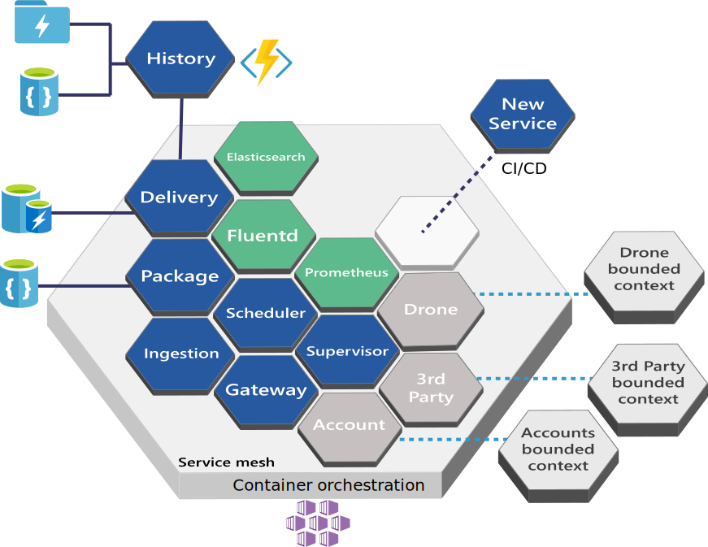

Docker
Orkestrering av kontainere

- Applikasjons lag
- Deler OS kernel med andre kontainere
- Tar opp lite plass
Docker Compose
- Multi-container application
- Definerer applikasjonen og kjøremiljø i en yml-fil
- Bygger og starter flere Dockerfiles og/eller images
Docker compose config
version: '3'
services:
db:
image: mysql:5.7
volumes:
- dbdata:/var/lib/mysql
restart: always
environment:
MYSQL_ROOT_PASSWORD: somewordpress
MYSQL_DATABASE: wordpress
MYSQL_USER: wordpress
MYSQL_PASSWORD: wordpress
wordpress:
depends_on:
- db
image: wordpress:latest
ports:
- "8000:80"
restart: always
environment:
WORDPRESS_DB_HOST: db:3306
WORDPRESS_DB_USER: wordpress
WORDPRESS_DB_PASSWORD: wordpress
volumes:
dbdata:
Use Cases
- Utviklermiljø
- Automatisk testmiljø
- Single host deployment
Docker Swarm
- Kontainer platform
- Swarm av Docker Engines
- Kjøremiljø for flere applikasjoner og containere
- Kan håndtere load balancing og skalering
- Kontainer platform
- Open Source system for å håndtere kontainerapplikasjoner
- Støttet av Google
- Kan kjøres on-premise eller cloud

Kubernetes Konsepter
- Master node: API, manager og scheduler
- Noder: Maskin/Engine
- Pods
- Services
- Volumes

Hvorfor bruke Kubernetes?
- Fleksibel hosting
- Økosystem av applikasjoner og services
- Deploye nye versjoner uten nedetid
- Scaling ved behov med replicas